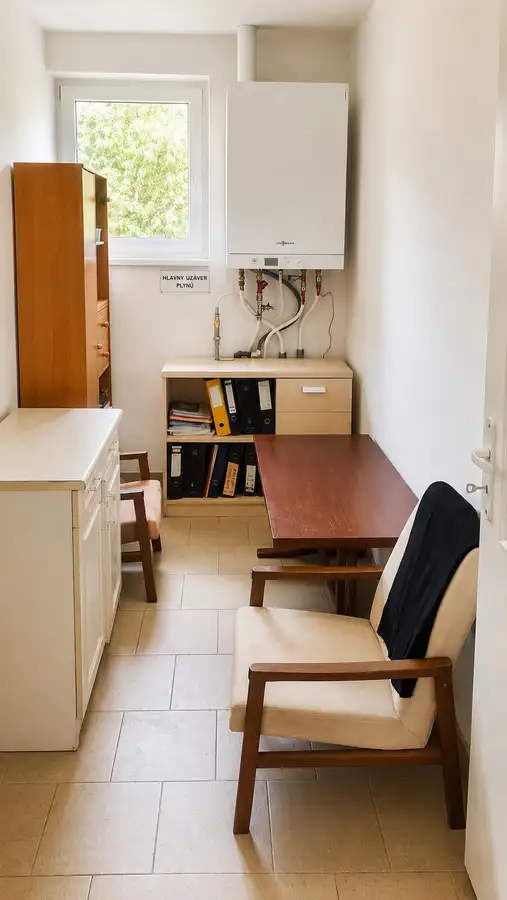
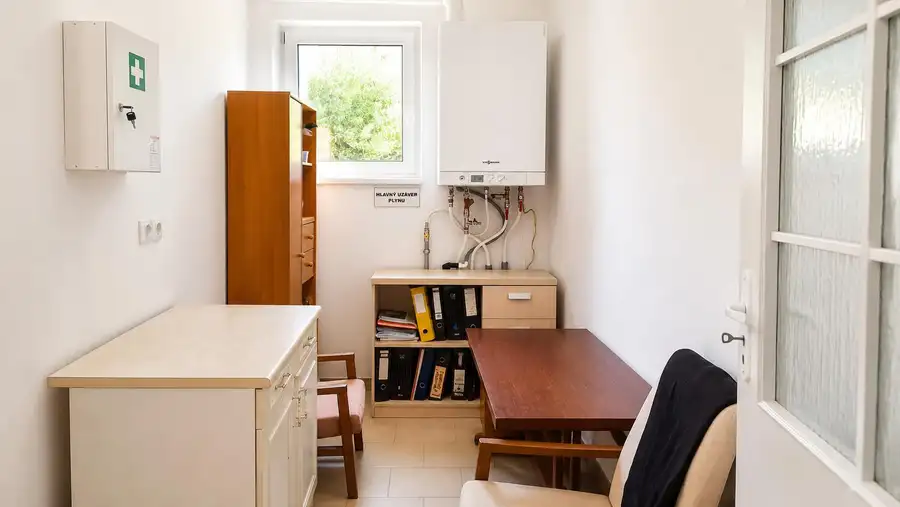
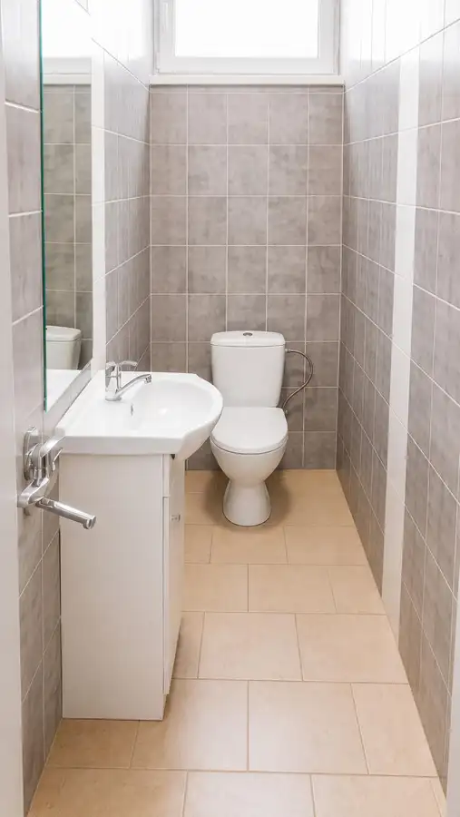
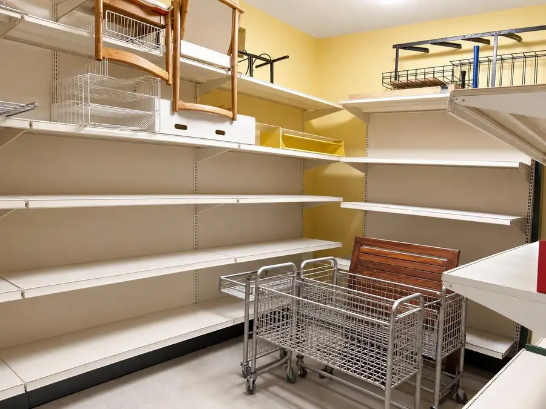
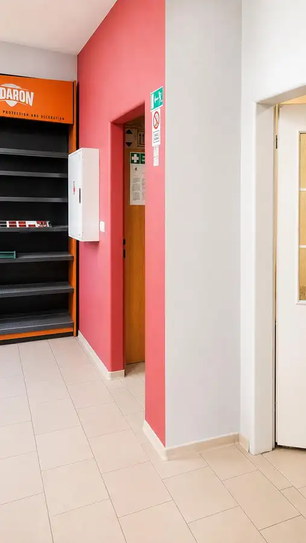
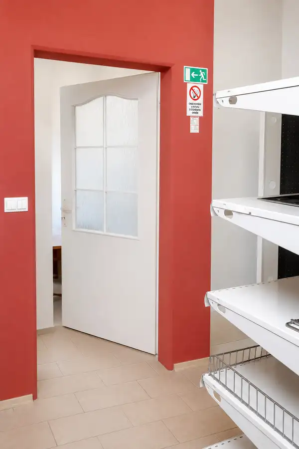

TARGETreal ponúka na predaj samostatný prevádzkový priestor blízko centra Turčianskych Teplíc – ambulancia, služby, kancelária alebo predajňa
Turčianske Teplice







- Plocha115 m²
- StavNovostavba
- VlastníctvoFiremné
O nehnuteľnosti
Hľadáte vlastný priestor pre podnikanie, kde vás klienti ľahko nájdu a zároveň pohodlne zaparkujú? V exkluzívnom zastúpení ponúkame na predaj samostatný prevádzkový priestor v Turčianskych Tepliciach, ktorý je vhodný pre ambulanciu lekára, zdravotnícke alebo terapeutické služby, kanceláriu, obchodnú prevádzku, showroom, klientske centrum alebo menšiu predajňu.Nehnuteľnosť sa nachádza blízko centra Turčianskych Teplíc. Vďaka svojej polohe je vhodná pre podnikanie, ktoré potrebuje dobrú dostupnosť, praktické zázemie a komfort pre klientov či zákazníkov. Turčianske Teplice sú vyhľadávané kúpeľné mesto s celoročnou návštevnosťou, čo vytvára prirodzený potenciál najmä pre služby, zdravotnícke využitie, poradenstvo alebo obchod.Priestor má výmeru 136 m² a dispozične ponúka predajnú alebo klientsku časť, sklad, kanceláriu, šatňu a samostatné WC. Vďaka tomuto členeniu je možné objekt prispôsobiť rôznym typom prevádzok – od ambulancie, cez fyzioterapiu, kozmetiku či masáže, až po kancelárie, poisťovňu, účtovníctvo, realitnú kanceláriu alebo menší showroom.Veľkým benefitom sú parkovacie miesta patriace ku prevádzke. K objektu je zabezpečených 5 parkovacích miest, čo je pri tomto type nehnuteľnosti výrazná výhoda. Vaši klienti, pacienti, zákazníci aj zamestnanci tak nemusia riešiť zdĺhavé hľadanie parkovania v okolí. Pri ambulancii, službách alebo klientskom centre je práve parkovanie často rozhodujúci faktor.Ďalšou praktickou výhodou je bezbariérový vstup riešený rampou, ktorý zvyšuje komfort prístupu pre všetkých klientov. Tento benefit ocenia najmä zdravotnícke, terapeutické, poradenské alebo administratívne prevádzky.Nehnuteľnosť je vhodná napríklad pre:ambulanciu všeobecného lekára alebo špecialistu,fyzioterapiu, rehabilitáciu, masáže alebo terapeutické služby,kozmetiku, estetické služby alebo salón,poisťovňu, finančné poradenstvo, účtovníctvo alebo realitnú kanceláriu,klientske centrum, administratívne služby alebo sídlo firmy,showroom, vzorkovňu, menšiu predajňu alebo výdajné miesto,kombináciu predajnej časti, kancelárie a skladu.Technicky ide o moderný objekt skolaudovaný v roku 2016. Je postavený z kvalitných materiálov, má podlahové vykurovanie, plynový kondenzačný kotol, plastové okná, strešné okná a dlažbu. Objekt je napojený na elektrinu, vodu, kanalizáciu a plyn, pričom na ulici je dostupná aj optika Telekom.Prevádzkové náklady sú podľa podkladov nízke – približne 125 € mesačne, čo je pri komerčnom priestore tejto veľkosti veľmi priaznivé.Tento komerčný priestor pre služby a podnikanie je vhodný pre niekoho, kto chce prestať platiť nájom a vybudovať si vlastnú prevádzku. Zároveň môže byť zaujímavý aj ako investičná nehnuteľnosť na dlhodobý prenájom stabilnému nájomcovi – napríklad lekárovi, fyzioterapeutovi, finančnej spoločnosti, poisťovni alebo inej prevádzke služieb.Hlavné výhody nehnuteľnosti:136 m² využiteľnej plochy,samostatný prevádzkový priestor,blízko centra a kúpeľnej zóny,5 parkovacích miest pri prevádzke,bezbariérový vstup,nízke mesačné náklady,vhodné pre ambulanciu, služby, kanceláriu alebo predajňu,možnosť prispôsobenia podľa vlastného podnikateľského zámeru.Cena: 169 000 €V cene je zahrnutý kompletný právny servis a provízia realitnej kancelárie.Pre viac informácií alebo dohodnutie obhliadky nás kontaktujte. Radi vám ukážeme samotný priestor aj jeho možnosti využitia pre vaše podnikanie.Ing. Branislav PálešTARGETreal +421 907 741 602 branislav.pales@targetreal.sk
Parametre
- Druh
- Polyfunkčný objekt
- Dátum zverejnenia
- 01. 10. 2026
- Elektrina
- Na pozemku - 230 V
- Energetický certifikát budovy
- nie je
- Energie
- 125
- Odpadové vody
- Na pozemku - Kanalizácia
- Orientácia
- Východná
- Plyn
- Na pozemku
- Počet nadzemných podlaží
- 1
- Rok kolaudácie
- 2016
- Rok výstavby
- 2016
- Stav nehnuteľnosti
- Novostavba
- Telekomunikácie
- Internet, Optická sieť
- Typ
- Predaj
- Vlastníctvo
- Firemné
- Zastavaná plocha
- 136 m²
- Úžitková plocha
- 115 m²
Kde to je


Mohlo by Vás zaujímať
 BytNové
148 000 €TARGETreal | Na predaj 3 izbový byt v Turčianskych Tepliciach – viac než 70 m² pohodlia bez ďalších investícií
Turčianske Teplice
3-izbový71.49 m²4. podlažie
BytNové
148 000 €TARGETreal | Na predaj 3 izbový byt v Turčianskych Tepliciach – viac než 70 m² pohodlia bez ďalších investícií
Turčianske Teplice
3-izbový71.49 m²4. podlažie
 DomNové
269 000 €TARGETreal | Na predaj rodinný dom s 2 samostatnými vstupmi a veľkým pozemkom v Turčianskych Tepliciach
Turčianske Teplice
250 m²
DomNové
269 000 €TARGETreal | Na predaj rodinný dom s 2 samostatnými vstupmi a veľkým pozemkom v Turčianskych Tepliciach
Turčianske Teplice
250 m²
 Komerčné priestoryNové
379 000 €Na predaj komerčný objekt s výbornou dostupnosťou – sklad, showroom alebo predajná plocha (Diviaky, Turčianske Teplice)
Turčianske Teplice
609 m²
Komerčné priestoryNové
379 000 €Na predaj komerčný objekt s výbornou dostupnosťou – sklad, showroom alebo predajná plocha (Diviaky, Turčianske Teplice)
Turčianske Teplice
609 m²